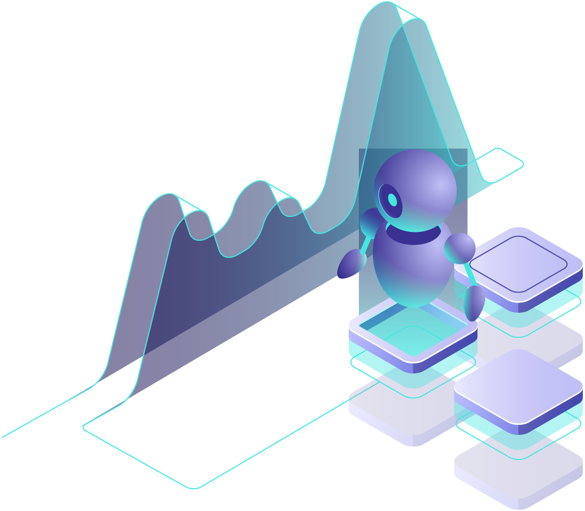

Smarter Decisions,
Faster Growth
Save 10–20 hours every week & boost revenue by 10%+
with automation & data-driven dashboards.

Save 10-20 hours every week & boost revenue by 10%+ with automation & data-driven dashboards.
Save 10–20 hours every week & boost revenue by 10%+
with automation & data-driven dashboards.

Businesses today lose countless hours every week on repetitive, low-value tasks. From manual reporting to
customer
support queries, valuable time is wasted that could instead drive growth and innovation.
At Lets Viz Technologies, we empower businesses with Al-driven automation – seamlessly integrating intelligent
workflows and custom Al agents using tools like Zapier, Make, nBn, Power Automate, and tailored Al solutions.
Teams spend countless hours on repetitive reporting, invoicing, and manual data entry, slowing overall growth.
Information spread across spreadsheets and CRMs makes tracking, analysis, and collaboration inefficient.
Maintaining large support teams for repetitive, low-value tasks increases costs without delivering value.
Delayed follow-ups and lack of timely insights result in missed sales opportunities and lower conversions.
Generic, non-targeted marketing campaigns lead to poor engagement and disappointing returns.
Overwhelmed employees spend time firefighting instead of focusing on strategic tasks.
Automating workflows reduces repetitive tasks, saving 10–20 hours weekly and boosting productivity.
Unified BI dashboards integrate finance, sales, and marketing data for smarter decisions.
24/7 chatbots and virtual assistants handle queries instantly, reducing costs and improving service.
AI-driven lead scoring and automated follow-ups help close deals faster and more consistently.
Intelligent targeting and personalization deliver 20–30% better returns on marketing investment.
Teams focus on growth initiatives while AI automates repetitive tasks for long-term scalability.

See how our solutions empower businesses to achieve more.
Automate onboarding, invoicing, HR, and reporting with custom AI workflows. Free your team from repetitive admin work.
Deploy AI chatbots & voice agents to resolve queries, FAQs, and route calls intelligently — reducing support costs.
Run data-driven campaigns across email, LinkedIn & ads. Personalize outreach & improve engagement.
Automate lead qualification, CRM updates, and follow-ups to shorten cycles & boost productivity.
Get expert-designed automation strategies, optimized workflows, and competitive edge solutions.
Transform raw data into dashboards (Finance, P&L, PPC, Campaigns) for real-time decision making.
At Lets-Viz Technologies, we go beyond basic automation — we combine Generative AI (Gen AI) with Business Intelligence (BI) to create solutions that don’t just save time but also unlock growth. Whether it’s building AI-powered dashboards, automating workflows, or developing custom AI agents, our focus is on helping businesses make smarter, faster, and data-driven decisions. With proven expertise across industries in India, the US, UK, and Australia, we’ve helped CFOs, CMOs, and founders boost revenue, cut costs, and scale efficiently.
From dashboards to AI agents, we deliver solutions that blend analytics with automation — designed for real business impact.
No cookie-cutter approach. Every workflow, dashboard, or AI model is customized to fit your industry and goals.
We cover it all — from client onboarding automation to AI-driven sales, marketing, and reporting — so your team can focus on growth.
We use cutting-edge tools like Zapier, Make, Power Automate, and custom AI agents to ensure your systems are always ahead of the curve.
Your data and information are our top priority. We uphold the highest standards of confidentiality and security, ensuring your sensitive data remains safe and protected at all times.
We offer flexible engagement models tailored to your specific requirements. Whether you need short-term assistance or long-term collaboration, we have customizable options that fit your business needs seamlessly.
AI workflow automation leverages artificial intelligence to streamline and optimize business processes. Unlike traditional automation, which follows predefined rules, AI-driven systems learn from data and adapt to changing conditions. This enables businesses to automate complex tasks, reduce manual errors, and improve efficiency across departments such as sales, marketing, and customer support. By integrating AI into workflows, organizations can achieve faster decision-making and enhanced productivity.
BI automation helps your company make data-driven decisions by reducing manual reporting, improving accuracy, and offering real-time insights that enhance productivity and growth.
AI can automate data entry, lead scoring, email marketing, customer service, financial forecasting, and much more depending on your business goals.
Absolutely. Small businesses can leverage AI tools to reduce operational costs, streamline processes, and enhance customer engagement without major infrastructure.